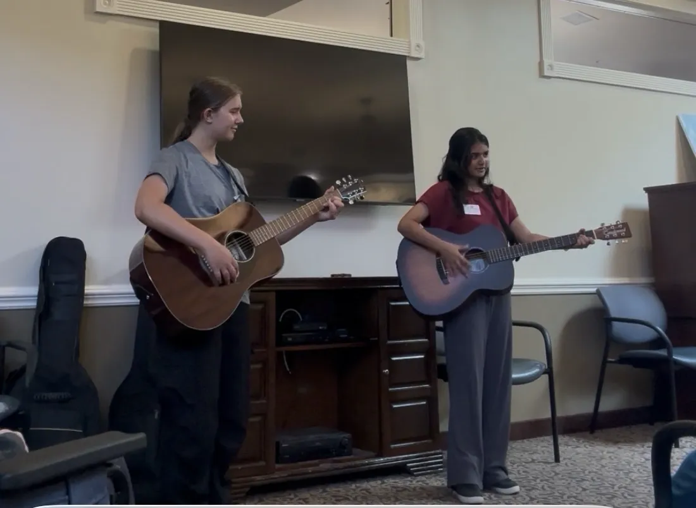
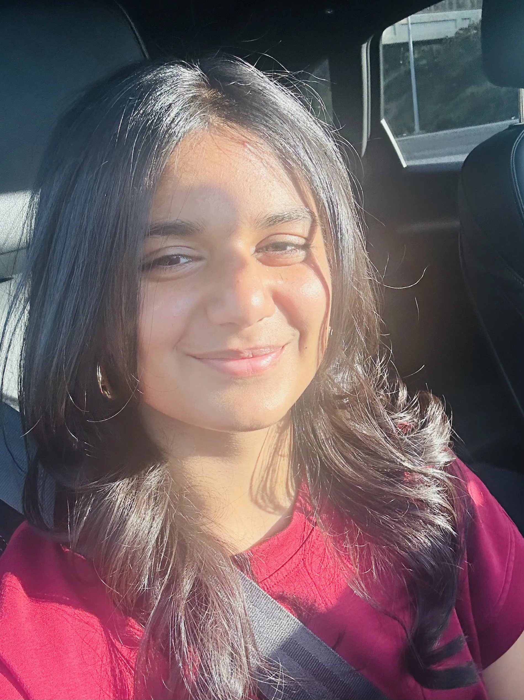
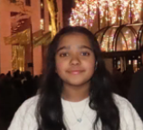
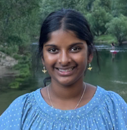
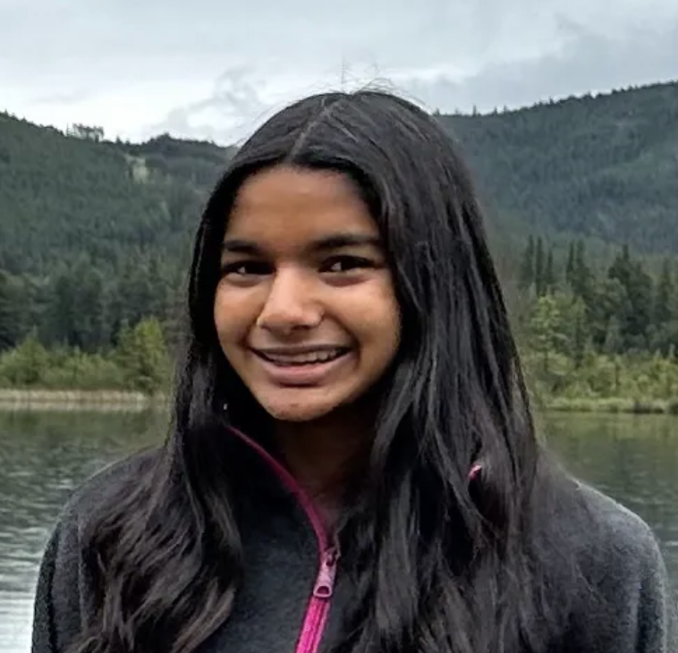

Bridging live acoustic music with
Human Connection
The Acoustic Project (TAP) is a student-run initiative dedicated to bringing intentional, live acoustic performances and outreach to communities.

Who We Are
We are a high-school student-led initiative bridging the gap between brain health and community outreach. By combining our musical grounding with cognitive science, we bring intentional sound to individuals who can benefit from it most.
What We Do
We perform live acoustic sets, host public awareness events, and curate a digital journal of musical memories shared directly by our community.
TAP Services
What TAP actually does in the community.
TAP Performances
Recurring live acoustic performances at memory care facilities, hospitals, mental health centers, and organizations across San Diego.
TAP Initiatives
Our awareness initiatives use music to encourage conversations about brain health, memory, and wellbeing through community outreach, musical experiences, and educational engagement.
TAP Journal
Our journal exploring the intersection of music, neuroscience, and human experience through research insights, scientific discoveries, and reflections on how music influences memory, emotion, and cognition.
TAP Dedications
A program where community members submit a song and the memory behind it. We showcase these moments to share what they mean to our community.
TAP Talks
Interactive, accessible presentations on music and the brain delivered at libraries and community centers.
Performances & Initiatives
Taking the science of sound directly into the community.
Our Venues
We partner with local healthcare facilities to bring recurring acoustic sets to patients and residents. Our current locations include:
- ActivCare Senior Living, 4S Ranch:
- Sharp Grossmont Hospital:
- Glenner Memory Care Centers:
Community Initiatives
Our awareness initiatives focus on using music as a platform to promote understanding of the connection between music, the brain, and overall wellbeing. These initiatives may include community-based musical experiences, outreach efforts, and opportunities for individuals to engage with the role music plays in memory, emotion, and human connection.
Want TAP at your facility?
We are always looking to partner with new locations and spaces. Reach out to schedule a performance or initiative.
TAP Talks
TAP Talks are short presentations on music and the brain, delivered at libraries, community centers, and public events.
Topics we cover include:
- How music affects memory in Alzheimer's patients.
- Music and Memory: How Songs Shape the Way We Remember
- The Brain’s Reward System: Why Music Feels Good
Recent Talks
The Sound & Memory Connection
4s Rancb LibraryAn interactive breakdown of why childhood songs survive late-stage dementia.
Watch PresentationHost a Talk
Are you a local library, school, or community center? We are actively booking TAP Talks for the upcoming season to share the science of sound with the public.
TAP Dedications
Submit a song and the memory behind it. We showcase these important musical moments on our Instagram to share what they mean to our community, and we may perform it at a future performance.
Chapter Relations
As we grow, we are expanding our mission to different age groups and locations. Here are our current active chapters.
High School Chapter
Our High School Chapter focuses on expanding our core mission: organizing recurring live acoustic sets at healthcare facilities, curating scientific insights into brain health, and managing our overarching outreach initiatives. We aim to foster student leadership and build meaningful community connections through the intentional use of sound.
Middle School Chapter
Focused on music creation, storytelling, and community outreach for a younger age group. Initiatives include:
- Sound Map: Turning classmate feelings into acoustic pieces.
- Music & Experiments: Exploring tempo, dynamics, and emotions.
- Mini Picture Books: Song-inspired stories for hospital patients.
- Music & Mind Cards: Calming cards with acoustic QR codes.
- Song of the Month: A newsletter bridging art, story, and sound.
- Audio Series: Live library performances and podcasts.
Interested in starting? Connect with us!
Requirements: Musical passion, dedication to community outreach, and an interest in bridging cognitive science with sound.
Email us directly: theacousticproject.sd@gmail.com
Apply to Start a ChapterAbout Us
Our Theme & Mission
The Acoustic Project believes in the profound connection between sound and the human mind.
Our work is about intentional connection. By pairing live acoustic music with a deep understanding of cognitive science, we aim to foster awareness and understanding of music and the mind.
The Founders & Team

Anika Seksaria
Co-founder
Emily Rinderknecht
Co-founder
Triya Muralikrishnan
TAP Talk Lead
Ria Kotta
TAP Journal Lead